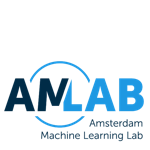

<!DOCTYPE html>
<html lang="en-US">
  <head>
    <meta charset="UTF-8">

<!-- Begin Jekyll SEO tag v2.7.1 -->
<title> 预测，学习与博弈 中文翻译</title>
<meta name="generator" content="Jekyll v3.9.0" />
<meta property="og:title" content="预测，学习与博弈" />
<meta property="og:locale" content="en_US" />
<meta name="description" content="Prediction, Learning, and Games by Nicolo Cesa-Bianchi & Gabor Lugosi 中文翻译" />
<meta property="og:description" content="Prediction, Learning, and Games by Nicolo Cesa-Bianchi & Gabor Lugosi 中文翻译" />
<meta property="og:site_name" content="Machine Learning 1" />
<script type="application/ld+json">
<!-- End Jekyll SEO tag -->

    <link rel="preconnect" href="https://fonts.gstatic.com">
    <link rel="preload" href="https://fonts.googleapis.com/css?family=Open+Sans:400,700&display=swap" as="style" type="text/css" crossorigin>
    <meta name="viewport" content="width=device-width, initial-scale=1">
    <meta name="theme-color" content="#157878">
    <meta name="apple-mobile-web-app-status-bar-style" content="black-translucent">
    <link rel="stylesheet" href="/assets/css/style.css?v=7c6f17a92dfe1c7ec50ab74cbc1a9989c3e065e8">
    <!-- start custom head snippets, customize with your own _includes/head-custom.html file -->

<!-- Setup Google Analytics -->


<!-- You can set your favicon here -->
<!-- link rel="shortcut icon" type="image/x-icon" href="/favicon.ico" -->

<!-- end custom head snippets -->

  </head>
  <body>
    <a id="skip-to-content" href="#content">Skip to the content.</a>

    <header class="page-header" role="banner">
      <h1 class="project-name">预测，学习与博弈</h1>
      <h2 class="project-tagline">Prediction, Learning, and Games by Nicolo Cesa-Bianchi & Gabor Lugosi 中文翻译</h2>
      
      
    </header>

    <main id="content" class="main-content" role="main">
      <h2 id="intro">简介</h2>

<p>Welcome to the public page for the course Machine Learning 1. The course is part of the <a href="https://www.uva.nl/en/programmes/masters/artificial-intelligence/artificial-intelligence.html">Artificial Intelligence master program</a> at the <a href="https://www.uva.nl/en">University of Amsterdam</a>. The course is developed by the <a href="https://amlab.science.uva.nl">Amsterdam Machine Learning Lab</a> and currently taught by <a href="https://scholar.google.com/citations?hl=en&amp;user=yeWrfR4AAAAJ&amp;view_op=list_works&amp;sortby=pubdate">dr.ir. Erik Bekkers</a>.</p>

<p>This page presents an overview of the course including links to the lectures (<a href="https://www.youtube.com/playlist?list=PL8FnQMH2k7jzhtVYbKmvrMyXDYMmgjj_n">this Youtube channel</a>) and the corresponding annotated slides in pdf. Students enrolled for the course are referred to Canvas for extra materials such as practice exercises, homework assignments, lab assignments (jupyter notebooks) and additional resources.</p>

<p>In this lecture series we follow closely the <a href="https://www.microsoft.com/en-us/research/people/cmbishop/prml-book/">Pattern Recognition and Machine Learning</a> book by Bishop. Relevant chapters are indicated at the start of each video.</p>

<p>The contents of this page and the video lectures are licensed under a <a href="https://creativecommons.org/licenses/by/4.0/">Creative Commons Attribution 4.0 International License</a>.</p>

<p align="center" width="100%">
          &nbsp;&nbsp;&nbsp;&nbsp;&nbsp;&nbsp;&nbsp;&nbsp;&nbsp;&nbsp;&nbsp;&nbsp;&nbsp;&nbsp;&nbsp;&nbsp;       
</p>

<h3 id="weekly-overview">Weekly overview</h3>

<h4 id="week-1">Week 1</h4>
<ul>
  <li>Lecture 1.1 (<del>video</del>, <a href="/2020/slides/1.1_CourseInformation.pdf">pdf</a>): Introduction to the course, administrative announcements</li>
  <li>Lecture 1.2 (<a href="https://www.youtube.com/watch?v=_XmGyd4smUs&amp;list=PL8FnQMH2k7jzhtVYbKmvrMyXDYMmgjj_n&amp;index=2">video</a>, <a href="/2020/slides/1.2_WhatIsMachineLearning.pdf">pdf</a>): What is Machine Learning?</li>
  <li>Lecture 1.3 (<a href="https://www.youtube.com/watch?v=ieAzK_Q2QHk&amp;list=PL8FnQMH2k7jzhtVYbKmvrMyXDYMmgjj_n&amp;index=3">video</a>, <a href="/2020/slides/1.3_TypesOfMachineLearning.pdf">pdf</a>): Types of Machine Learning</li>
  <li>Lecture 1.4 (<a href="https://www.youtube.com/watch?v=0fCTk5ElCqg&amp;list=PL8FnQMH2k7jzhtVYbKmvrMyXDYMmgjj_n&amp;index=4">video</a>, <a href="/2020/slides/1.4_ProbabilityTheoryBayes.pdf">pdf</a>): Probability Theory, Bayes Theorem</li>
  <li>
    <p>Lecture 1.5 (<a href="https://www.youtube.com/watch?v=pO2bnMvkTT0&amp;list=PL8FnQMH2k7jzhtVYbKmvrMyXDYMmgjj_n&amp;index=5">video</a>, <a href="/2020/slides/1.5_ProbabilityTheoryExample.pdf">pdf</a>): Probability Theory: An Example</p>
  </li>
  <li>Lecture 2.1 (<a href="https://www.youtube.com/watch?v=NUVrZ1WvO-Q&amp;list=PL8FnQMH2k7jzhtVYbKmvrMyXDYMmgjj_n&amp;index=6">video</a>, <a href="/2020/slides/2.1_ExpectationVariance.pdf">pdf</a>): Expectation, Variance, Covariance</li>
  <li>Lecture 2.2 (<a href="https://www.youtube.com/watch?v=VX1vEKxQCEo&amp;list=PL8FnQMH2k7jzhtVYbKmvrMyXDYMmgjj_n&amp;index=7">video</a>, <a href="/2020/slides/2.2_Gaussian.pdf">pdf</a>): Gaussian Distribution</li>
  <li>Lecture 2.3 (<a href="https://www.youtube.com/watch?v=UwulvIiS40M&amp;list=PL8FnQMH2k7jzhtVYbKmvrMyXDYMmgjj_n&amp;index=8">video</a>, <a href="/2020/slides/2.3_MaximumLikelihood.pdf">pdf</a>): Maximum Likelihood Estimation</li>
  <li>Lecture 2.4 (<a href="https://www.youtube.com/watch?v=Esr5MvJioUY&amp;list=PL8FnQMH2k7jzhtVYbKmvrMyXDYMmgjj_n&amp;index=9">video</a>, <a href="/2020/slides/2.4_MaximumLikelihoodExample.pdf">pdf</a>): Maximum Likelihood Estimation: An Example</li>
  <li>Lecture 2.5 (<a href="https://www.youtube.com/watch?v=4bvuBaDhQ4M&amp;list=PL8FnQMH2k7jzhtVYbKmvrMyXDYMmgjj_n&amp;index=10">video</a>, <a href="/2020/slides/2.5_MaximumAPosteriori.pdf">pdf</a>): Maximum A Posteriori</li>
  <li>Lecture 2.6 (<a href="https://www.youtube.com/watch?v=5Zo6WxRyJW0&amp;list=PL8FnQMH2k7jzhtVYbKmvrMyXDYMmgjj_n&amp;index=11">video</a>, <a href="/2020/slides/2.6_BayesianPrediction.pdf">pdf</a>): Bayesian Prediction</li>
</ul>


      <footer class="site-footer">
        
        <span class="site-footer-credits">This page was generated by <a href="https://pages.github.com">GitHub Pages</a>.</span>
      </footer>
    </main>
  </body>
</html>